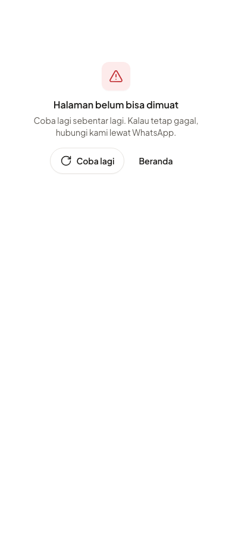
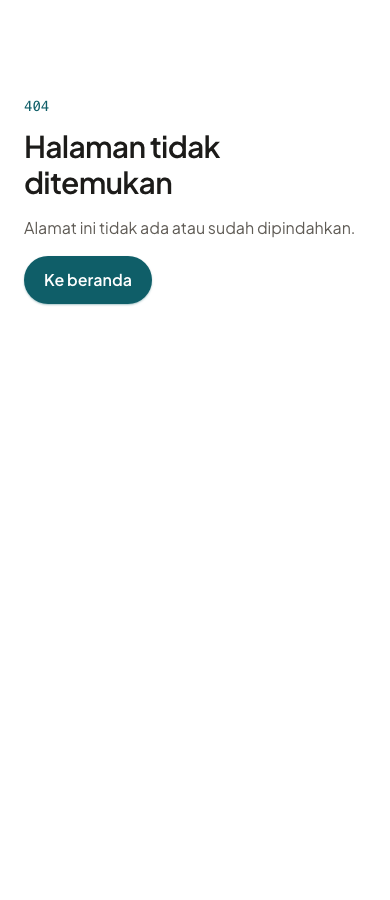
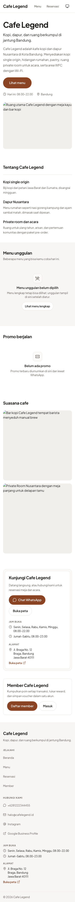

legend-uhp28 · fix/web-root-500
Root lokal berjalan, situs hilang menjadi 404
Tangkapan langsung dari localhost:3387, lebar 390 dan 1280 piksel. Basis reproduksi: ab574d58.
Sebelum: HTTP 500
Health API 200 dan situs pada domain seed 200. Host localhost belum terpetakan; loader meneruskan error 404 sebagai kegagalan server.
Lihat tangkapan desktop

Situs tidak tersedia: HTTP 404
Sesudah perbaikan loader, tanpa alias situs lokal. Halaman 404 yang sudah tersedia dirender dengan status yang benar.
Lihat tangkapan desktop

Sesudah setup: HTTP 200
Setup mengisi alias eksplisit dari domain seed terverifikasi. Hanya tiga GET publik dari loopback dalam development synthetic yang menggunakannya.
Lihat tangkapan desktop

Host langsung dan forwarded host yang tidak dikenal tetap 404. Doctor
menolak alias yang tidak valid. Endpoint situs adalah
/api/public/site;
/api/tenant/context menyediakan tema.